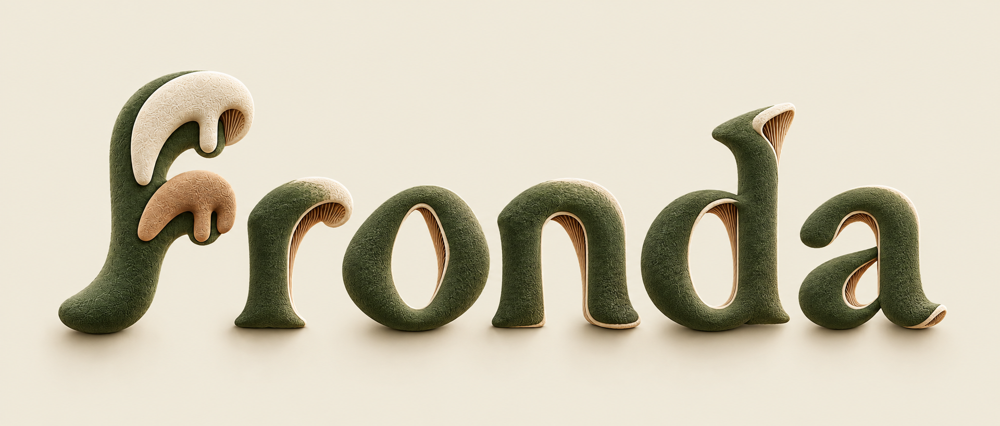
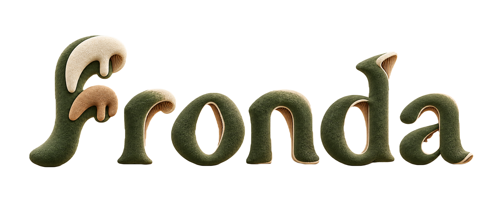
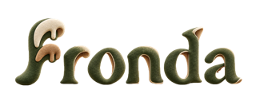
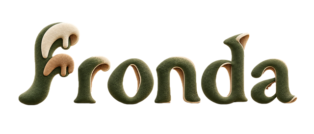
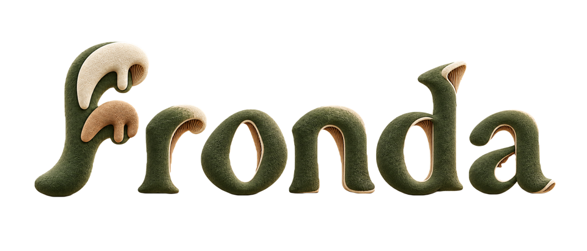

Personalidade em cada camada.
O lettering aprovado, preparado para uso. Musgo na superfície, marfim nas bordas e argila nas lamelas. A mesma forma, matéria e luz da direção escolhida.

Uma logo. Diferentes superfícies.
O arquivo transparente mantém as cores e a iluminação do original. Só o fundo e a sombra de chão são retirados.

Leitura antes do detalhe.
Em escalas menores, a silhueta sustenta o nome; a textura aparece conforme há espaço. Comece com 240 px de largura e prefira 320 px ou mais para valorizar o acabamento.



Preservar
Proporção, espaçamento, luz e cores. O “f” ramificado e as demais letras vêm da mesma matriz aprovada.
Aplicar
Fundos uniformes claros ou escuros. Sem contornos, brilho extra, deformações ou efeitos sobrepostos.
Respeitar a matriz
Arte raster de 1920 px. O pacote não contém fonte instalável, curvas vetoriais ou modelo 3D.
Pronta para usar.
Matriz original, master transparente, cinco tamanhos PNG, provas de fundo e guia de aplicação.